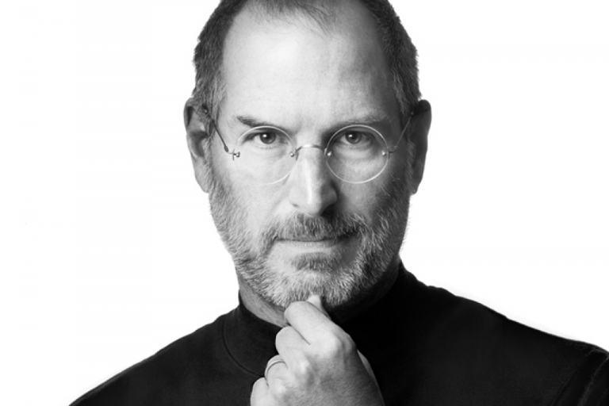

STEVE JOBS

Steve Jobs (1955-2011) foi um empresário norte-americano, fundou a Apple. Criou o "Macintosh", o "iPod", o "iPhone" e o "iPad". A Apple revolucionou a indústria de computadores pessoais, os filmes de animação, o mundo da música e dos telefones celulares.
Infância e formação
Steve Paul Jobs (1955-2011) nasceu em São Francisco, Califórnia, no dia 24 de fevereiro de 1955. Filho do sírio Abdulfattah Jandali e de Joanne Schieble foi adotado, por Paul Jobs, mecânico e membro da Guarda Costeira e da contadora Carla Jobs. A família morava em Mountain View, na Califórnia, dentro da área que mais tarde se tornaria conhecida como Vale do Silício. Ainda pequeno, viu seu pai montar e desmontar aparelhos eletrônicos na garagem da família.
Depois do curso básico, Jobs cursou a Homestead High School entre 1968 e 1972.
Nessa época, conheceu Steve Wozniak (1950), que estudava na Universidade da Califórnia, em Berkley e, era especialista em fazer programas e circuitos integrados. Concluído o curso médio, Jobes, matriculou-se na Reed College. Depois de seis meses abandonou o curso, mas continuou frequentando a faculdade, como ouvinte, das aulas de caligrafia, que posteriormente destacou como importante para sua formação.
Primeiro emprego
Em 1974, Steve Jobs trabalhou como designer de videogames na Atari. Depois de vários meses. Steve deixou a empresa e viajou para a Índia em busca de enriquecimento espiritual.
Criação da Apple
Em 1976, Jobs e Wozniak instalaram uma “fabrica” de computadores, na garagem da casa da família de Jobs na Califórnia. Em 1976 é lançado o computador "Apple I", o primeiro computador pessoal, vendido já montado, que era apenas uma placa mãe coberta com alguns chips e instalada em uma caixa de madeira. Em 1977 é lançado o computador "Apple II", que apresentava um mouse e um disco rígido interno. Com o passar dos anos, as criações de Jobs e Wozniak revolucionaram a indústria de computadores, tornando as máquinas menores e mais baratas.
Em janeiro de 1984 é lançado o "Macintosh" apelidado de "torradeira bege", que esquentava muito, pois não tinha ventilador. Apesar do sucesso das vendas e do desempenho superior aos PCs da IBM, o Macintosh não era compatível com a IBM. Centralizador e explosivo, nesse mesmo ano, Steve Jobs é afastado de sua própria empresa, por divergir das táticas de vendas.
Pixar
Em 1986, Steve Jobs compra a empresa de animação de George Lucas, que mais tarde se tornou a Pixar Animation Studios. Depois de investir 50 milhões de dólares na empresa, passou a produzir filmes como Toy Story e Procurando Nemo. Em 2006, o estúdio se fundiu com os estúdios Walt Disney.
Next
Depois de deixar a Apple, Steve Jobes criou a NEXT, uma empresa para desenvolvimento de softwares. Depois de dez anos, a empresa foi comprada pela Apple.
Retorno à Apple
Em 1997, Steve Jobs retornou ao cargo de CEO da Apple e iniciou o processo de revitalização da empresa. Com uma nova equipe administrativa a Apple lança produtos revolucionários, como o “iPode”, lançado em 2001,obrigando a indústria fonográfica a se reinventar. Em 2007 é lançado o "iPhone", celular com o comando feito com os dedos na tela digital, com acesso a internet e facilidade na criação de aplicativos. No ano de 2009, lança o computador de mão o "Netbook", pequeno e de fácil acesso a internet. Nesse mesmo ano, lança o iPad, o novo produto da Apple. Em junho de 2011, Steve Jobs anuncia o "iCloud", que resolveria o problema de armazenamento de arquivos. Fotos, músicas e aplicativos serão guardados em "nuvens" que são potentes servidores.
Esposa e filhos
Steve Jobs e Laurene Powell se casaram em 18 de março de 1991. O casal teve 3 filhos: Eve Jobs, Brin Siena Jobs e Reed Jobs. Steve também é pai de Lisa Brennan – Jobs, filha de seu relacionamento com a namorada Chrisann Brennan, quando ele tinha apenas 23 anos.
Doença e morte de Steve Jobs
Em 2003, Steve Jobs foi diagnosticado com um câncer raro. Descoberto no início, mas Jobs se negou a fazer a cirurgia e optou por fazer tratamentos alternativos. Durante nove meses adiou a cirurgia, que só foi realizada em 2004, para remover um tumor no pâncreas. Em 2009, sua saúde estava fragilizada, Jobs havia perdido muito quilos. Em um e-mail enviado aos funcionários, Jobs revelou: “problemas de saúde são mais complexos do que se pensava”. Nesse mesmo ano, nomeou Tim Cook para diretor de operações da Apple. Em janeiro de 2011, anunciou que estava saindo de licença médica. Em agosto ele renunciou o cargo de CEO e em outubro faleceu.
A Apple Inc. está localizada em Cupertino, uma das cidades que formam o Vale do Silício na Califórnia. O slogan da Apple é "Pense diferente". Várias frases de Steve ficaram famosas, entre elas "A jornada é a recompensa", "É melhor ser um pirata do que se juntar à Marinha".